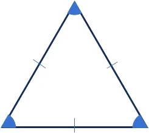
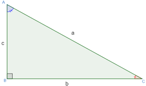

Um triângulo é uma figura geométrica composta por três lados e três ângulos.
Existem várias propriedades e características importantes associadas aos
triângulos, a seguir:
Definição e Classificação:
- Um triângulo é uma figura plana que possui três lados, três vértices e três
ângulos internos.
- Os triângulos podem ser classificados de acordo com as medidas de seus ângulos
e lados. Alguns tipos comuns incluem triângulos equiláteros (todos os lados e
ângulos iguais), triângulos isósceles (dois lados e ângulos iguais), e triângulos
escalenos (todos os lados e ângulos diferentes).

Propriedades Básicas:
- A soma dos ângulos internos de qualquer triângulo é sempre igual a 180 graus.
- A soma dos comprimentos de quaisquer dois lados de um triângulo é sempre maior
que o comprimento do terceiro lado, o que é conhecido como a desigualdade triangular.
Área e Perímetro:
- A área de um triângulo pode ser calculada usando a fórmula de Heron, que depende
dos comprimentos dos lados e do semiperímetro do triângulo.
- O perímetro de um triângulo é a soma dos comprimentos de seus três lados.
Classificação por Ângulos:
- Triângulos podem ser classificados de acordo com a medida de seus ângulos.
Um triângulo agudo tem todos os ângulos agudos (menos de 90 graus), um triângulo
obtuso tem um ângulo obtuso (mais de 90 graus), e um triângulo reto tem um ângulo
reto (90 graus).
Teorema de Pitágoras:
- O teorema de Pitágoras é aplicável a triângulos retos, onde a soma dos
quadrados das medidas dos catetos é igual ao quadrado da medida da hipotenusa.
Altura e Mediana:
- A altura de um triângulo é uma linha que parte de um vértice e é
perpendicular ao lado oposto.
- A mediana de um triângulo é uma linha que liga um vértice ao
ponto médio do lado oposto.
Triângulos Especiais:
- Triângulos equiláteros têm todos os lados e ângulos iguais.
Cada ângulo interno mede 60 graus.
- Triângulos isósceles têm dois lados e ângulos iguais.
O terceiro ângulo é diferente.
- Triângulos retângulos têm um ângulo reto e seguem o teorema de Pitágoras.

Aplicações Práticas:
- Triângulos são comuns em arquitetura, engenharia, física e design. Eles são
usados em cálculos de distância, medidas de altura, ângulos de inclinação e muitas
outras aplicações práticas.